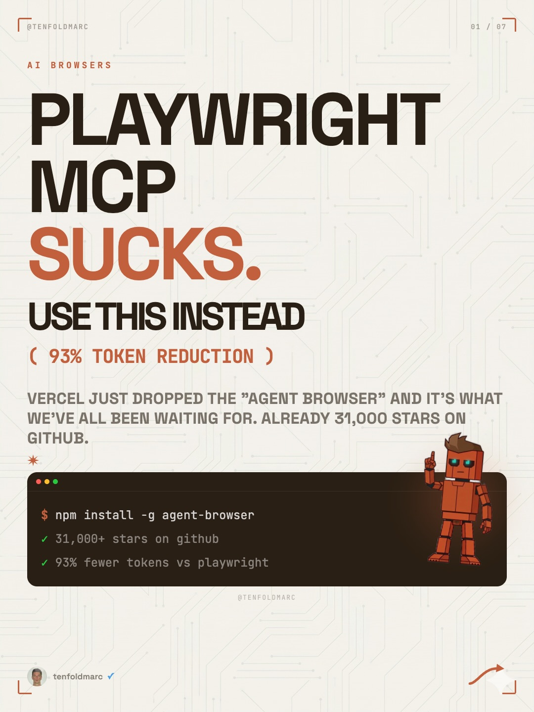
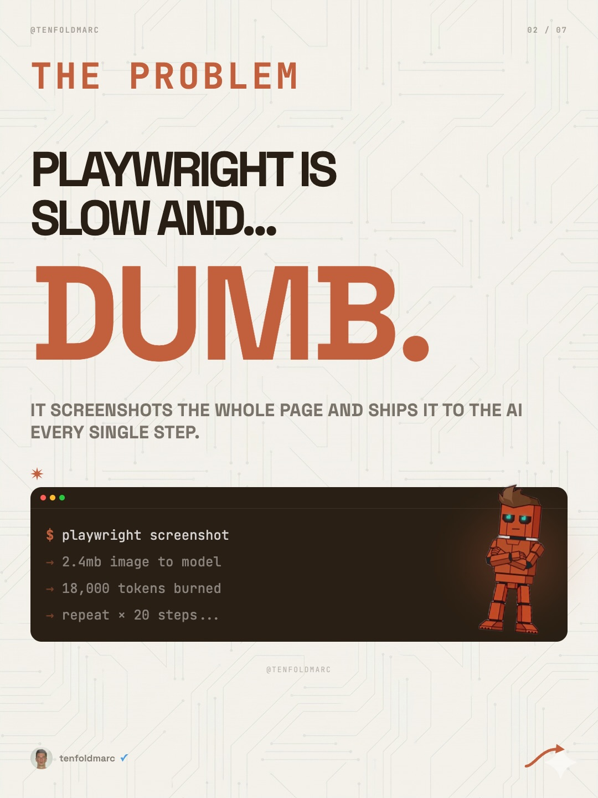
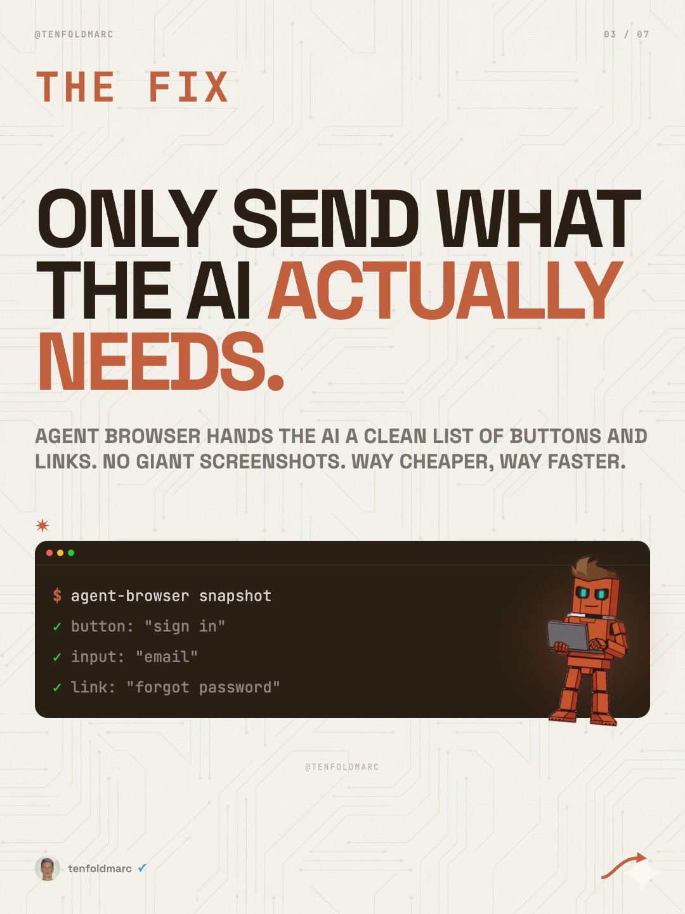
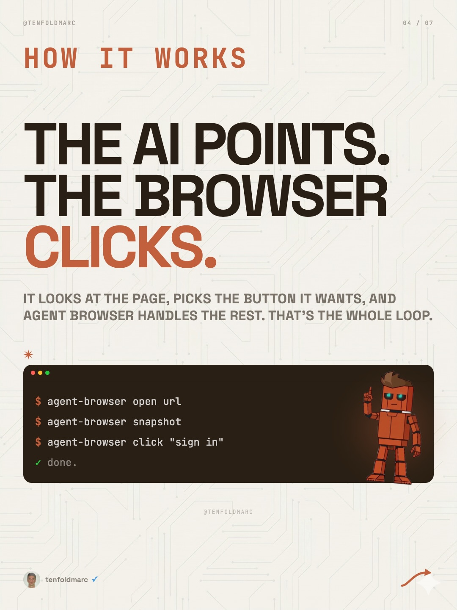
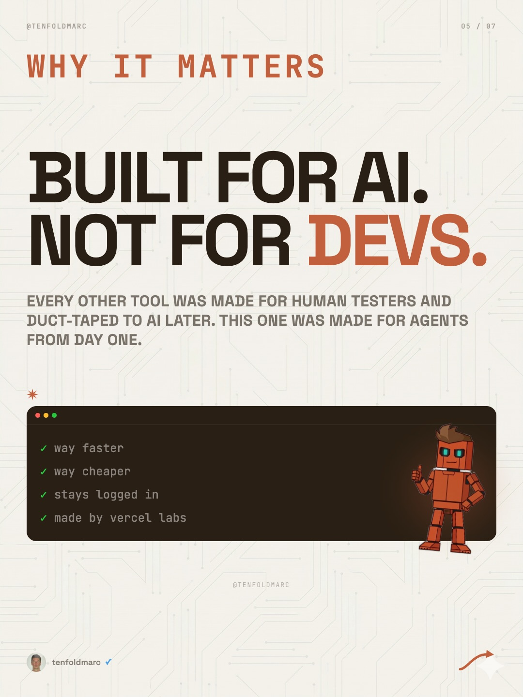
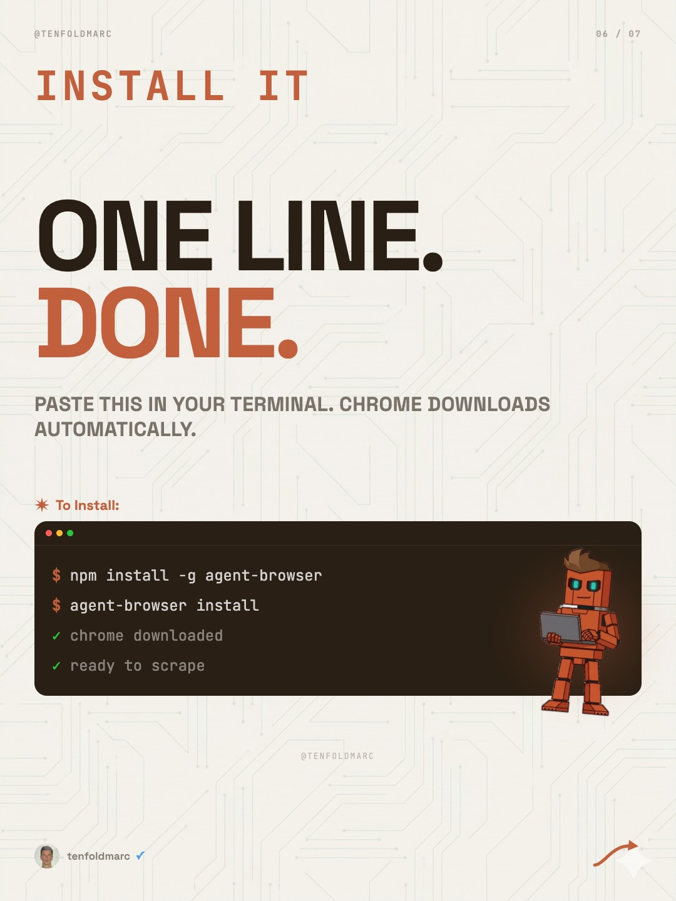

Instagram Post

Been waiting on a better solution for a HOT...
carousel (7 slides) (enriched by ClaudeClaw)
Summary
01 / 07 AI BROWSERS PLAYWRIGHT MCP SUCKS | 02 / 07 THE PROBLEM PLAYWRIGHT IS SLOW AND.. | 03 / 07 THE FIX ONLY SEND WHAT THE AI ACTUALLY NEEDS | 04 / 07 HOW IT WORKS THE AI POINTS | 05 / 07 WHY IT MATTERS BUILT FOR AI | 04 / 07 INSTALL IT ONE LINE | FREE WANT THE FULL SETUP GUIDE? COMMENT BELOW AND I'LL SE...
Caption
Been waiting on a better solution for a HOT minute.
1
@TENFOLDMARC 01 / 07 AI BROWSERS PLAYWRIGHT MCP SUCKS. USE THIS INSTEAD ( 93% TOKEN REDUCTION ) VERCEL JUST DROPPED THE "AGENT BROWSER" AND IT'S WHAT WE'VE ALL BEEN WAITING FOR. ALREADY 31,000 STARS ON GITHUB. $ npm install -g agent-browser 31,000+ stars on github 93% fewer tokens vs playwright @TENFOLDMARC tenfoldmarc
An infographic slide with a light background featuring circuit board lines, presenting a comparison between "Playwright MCP" and "Agent Browser" with text, a code snippet, and an orange robot character giving a thumbs up.
2
@TENFOLDMARC 02 / 07 THE PROBLEM PLAYWRIGHT IS SLOW AND... DUMB. SCREENSHOTS THE WHOLE PAGE AND SHIPS IT TO THE AI EVERY SINGLE STEP. $ playwright screenshot -> 2.4mb image to model -> 18,000 tokens burned -> repeat × 20 steps... @TENFOLDMARC tenfoldmarc
A presentation slide with a light background featuring a circuit board pattern, displaying text about "The Problem" with Playwright, a terminal window with code and output, and an orange block-like robot character.
3
@TENFOLDMARC 03 / 07 THE FIX ONLY SEND WHAT THE AI ACTUALLY NEEDS. AGENT BROWSER HANDS THE AI A CLEAN LIST OF BUTTONS AND LINKS. NO GIANT SCREENSHOTS. WAY CHEAPER, WAY FASTER. $ agent-browser snapshot button: "sign in" input: "email" link: "forgot password" @TENFOLDMARC tenfoldmarc
An infographic with a circuit board background features large text about AI, a terminal window displaying code, and an orange robot holding a laptop.
4
@TENFOLDMARC 04 / 07 HOW IT WORKS THE AI POINTS. THE BROWSER CLICKS. IT LOOKS AT THE PAGE, PICKS THE BUTTON IT WANTS, AND AGENT BROWSER HANDLES THE REST. THAT'S THE WHOLE LOOP. $ agent-browser open url $ agent-browser snapshot $ agent-browser click "sign in" done. @TENFOLDMARC tenfoldmarc
An infographic slide explains how an AI agent interacts with a browser, featuring a blocky orange robot character next to a code snippet.
5
@TENFOLDMARC 05 / 07 WHY IT MATTERS BUILT FOR AI. NOT FOR DEVS. EVERY OTHER TOOL WAS MADE FOR HUMAN TESTERS AND DUCT-TAPED TO AI LATER. THIS ONE WAS MADE FOR AGENTS FROM DAY ONE. way faster way cheaper stays logged in made by vercel labs @TENFOLDMARC tenfoldmarc
An infographic slide with a circuit board background features text about AI tools, a bulleted list of features, and an orange robot character giving a thumbs-up.
6
@TENFOLDMARC 04 / 07 INSTALL IT ONE LINE. DONE. PASTE THIS IN YOUR TERMINAL. CHROME DOWNLOADS AUTOMATICALLY. * To Install: $ npm install -g agent-browser $ agent-browser install ✓ chrome downloaded ✓ ready to scrape @TENFOLDMARC tenfoldmarc
A digital slide with a circuit board background displays instructions for installing software, featuring a code block and a small orange robot holding a laptop.
7
FREE WANT THE FULL SETUP GUIDE? COMMENT BELOW AND I'LL SEND YOU THE STEP-BY-STEP WITH EVERY COMMAND AND THE FREE GUIDE. BROWSER FOLLOW @TENFOLDMARC tenfoldmarc
A social media post displays text on a light background with a subtle circuit board pattern, offering a free setup guide.
All slides




